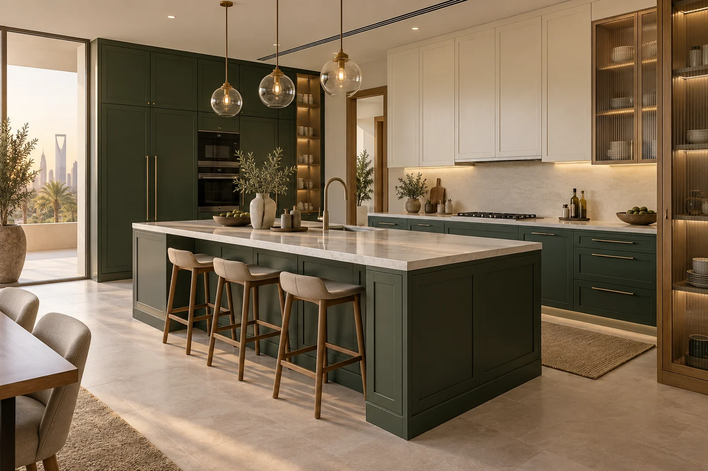
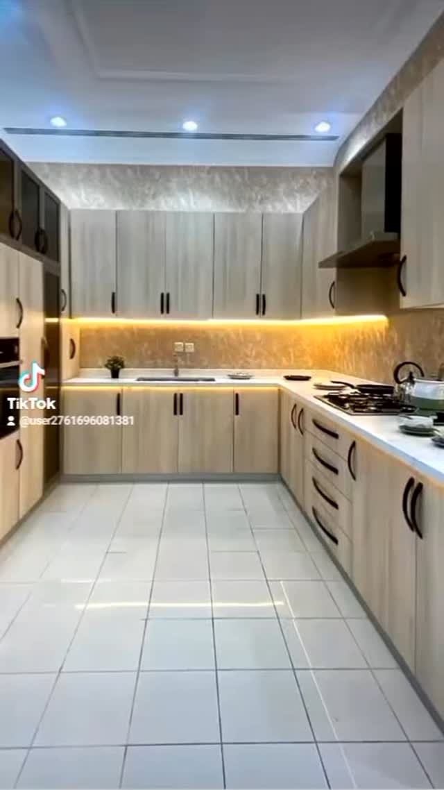
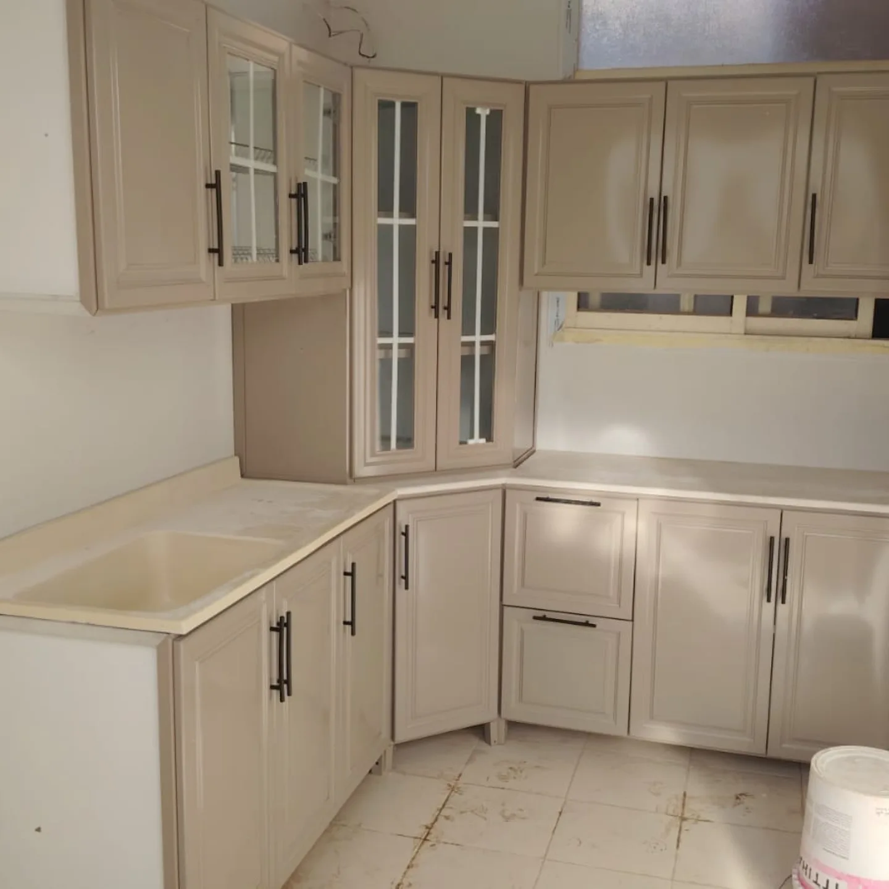
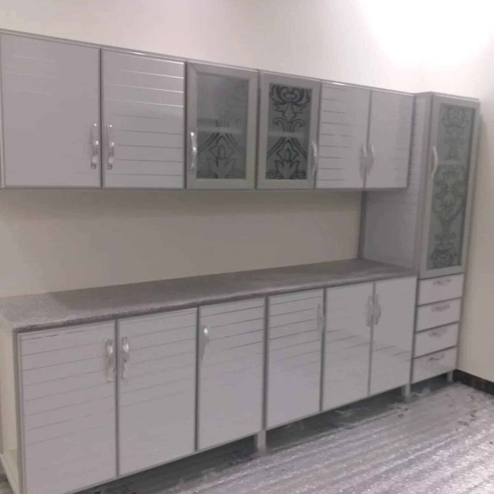
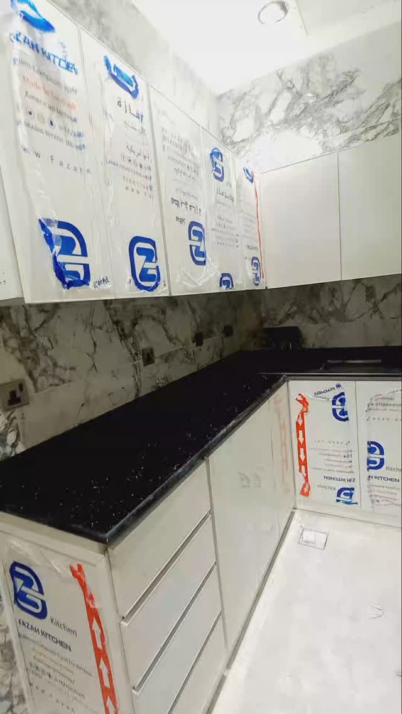
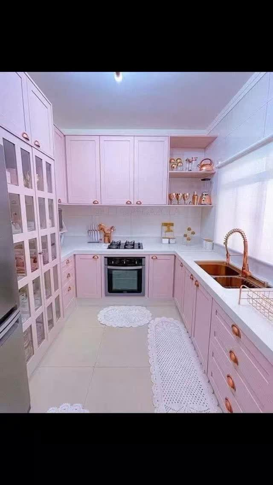

لون الواجهات
فاتح، رمادي، أو أكثر جرأة حسب الإضاءة ومساحة المطبخ.

معرض من الصور المنشورة للنشاط يوضح تعدد الاتجاهات بين الواجهات الفاتحة، التفاصيل الكلاسيكية، والخزائن العملية.
يقتصر هذا القسم على الصور المتاحة في الحساب الرسمي. الصورة الرئيسية تكمل الهوية البصرية للموقع.





حتى اللون الجريء يمكن أن يبدو متوازنًا حين يتكرر بنسب محسوبة وتدعمه أسطح وإضاءة أبسط.
قراءة بسيطة للصور تساعد على تحديد ما يعجبك قبل بدء الاستفسار.
فاتح، رمادي، أو أكثر جرأة حسب الإضاءة ومساحة المطبخ.
سطوح ناعمة أو إطارات كلاسيكية تغير شخصية المشروع بالكامل.
ترتيب الأجهزة داخل جدار الخزائن يحافظ على وضوح الواجهة.
أرسل الصورة التي أعجبتك مع صور المساحة والمقاسات التقريبية عبر واتساب.
 واتساب
واتساب